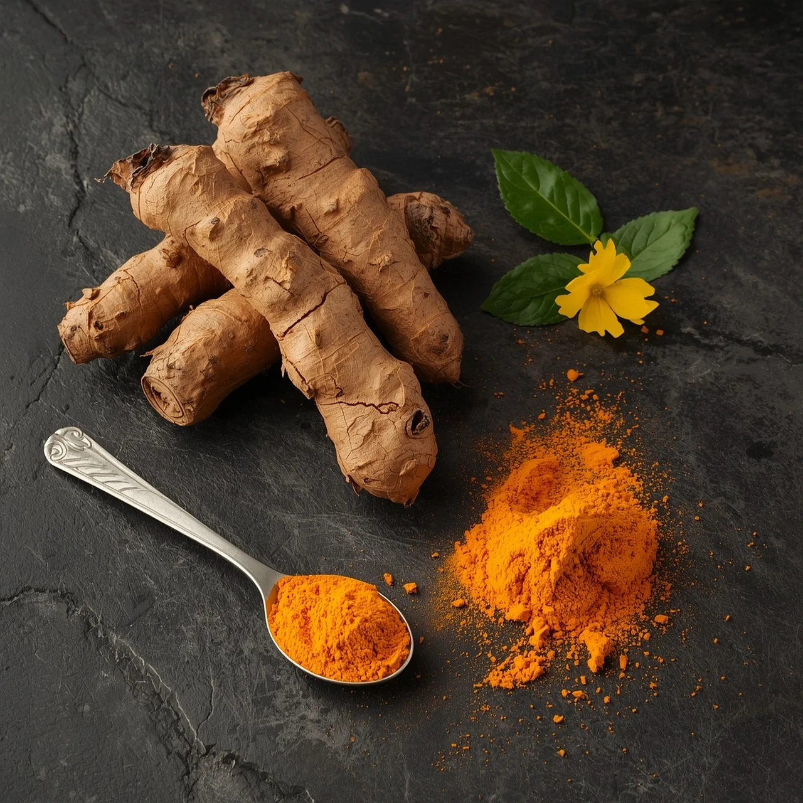
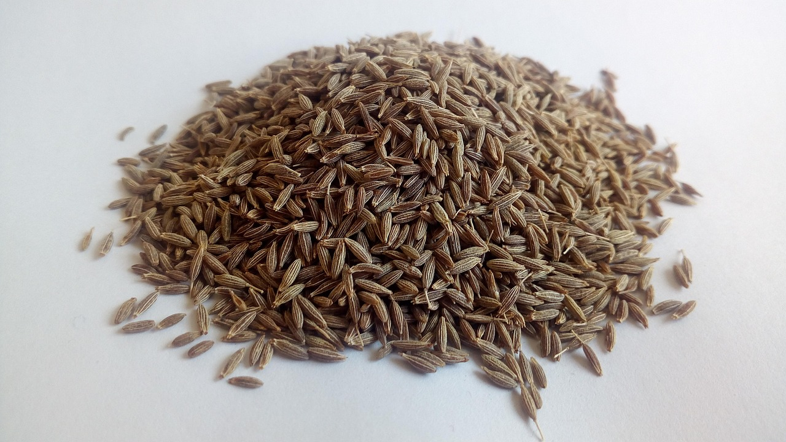
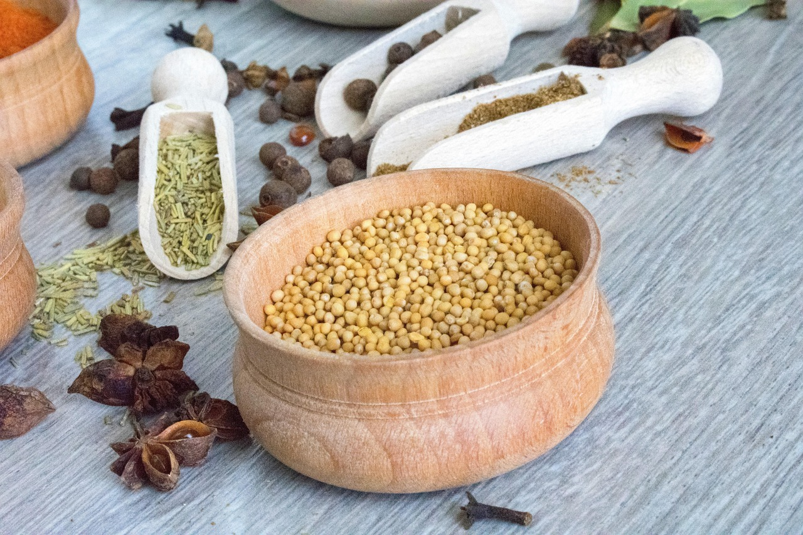
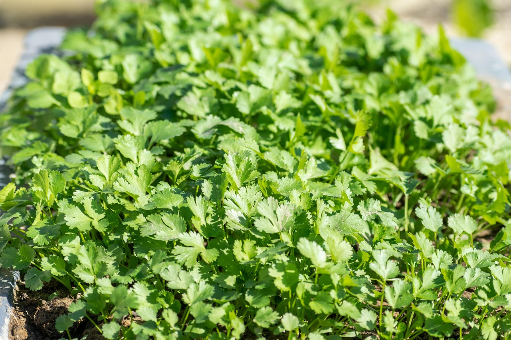
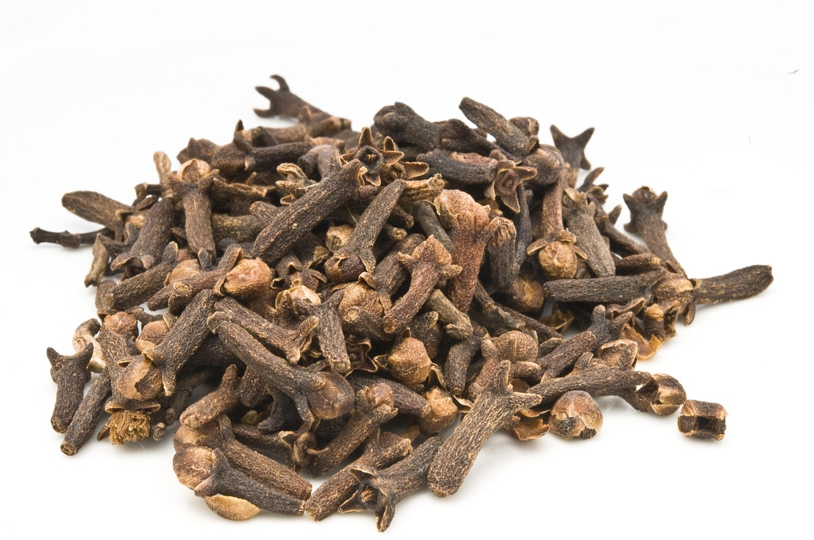
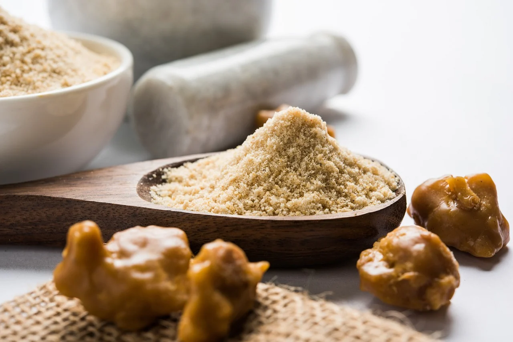

Wie Indien isst: Einblicke in eine jahrtausendealte Esskultur
Das Essen in Indien ist untrennbar mit Philosophie, Geografie und Religion verwoben. Es gibt keine homogene „indische Küche“, sondern ein Mosaik aus Regionalküchen. Im Norden dominieren durch persische Einflüsse cremige Saucen, Nüsse und Weizenbrote (Naan, Roti). Der Süden kocht schärfer, nutzt Kokosmilch und basiert fast vollständig auf Reis.
Zwei fundamentale Prinzipien prägen den indischen Alltag:
- Das Prinzip des Ayurveda: Nahrung gilt als erste Medizin. Gewürze werden selten nur wegen des Geschmacks genutzt, sondern um die Verdauung zu steuern. Jedes Gericht versucht, die sechs Geschmacksrichtungen (süß, sauer, salzig, scharf, bitter, herb) auszubalancieren.
- Traditionelles Teilen: Gegessen wird traditionell in der Gemeinschaft, oft auf dem Boden sitzend. Die Speisen werden auf einem großen Blech- oder Bananenblatt-Teller serviert (genannt Thali), auf dem sich verschiedene kleine Schälchen (Katoris) mit Linsen, Gemüse, Joghurt und Chutneys befinden.
Die rechte Hand: In weiten Teilen Indiens isst man ganz bewusst mit den Fingern der rechten Hand. Die Fingerkuppen gelten als Sinnesorgane, die dem Gehirn die Temperatur und Textur des Essens signalisieren, noch bevor es den Mund erreicht. Die linke Hand gilt als unrein und verbleibt am Tischrand.
1. Kurkuma (Gelbwurz)
Curcuma longa
Rezept: Klassisches Gelbes Linsen-Dal (Tarka Dal)
- 150g gelbe Linsen (Toor Dal oder rote Linsen) gründlich waschen und mit 500ml Wasser, 1 TL Kurkumapulver und etwas Salz in einem Topf ca. 20 Minuten weich kochen.
- In einer separaten kleinen Pfanne 2 EL Ghee oder Pflanzenöl erhitzen. Je einen TL Kreuzkümmelsamen und gehackten Knoblauch darin anbraten, bis sie duften.
- Dieses heiße Gewürzöl (genannt Tarka) direkt über die fertig gekochten, cremigen Linsen gießen, umrühren und mit frischem Koriander servieren.
2. Grüner Kardamom
Elettaria cardamomum
Rezept: Authentischer indischer Masala Chai
- 4 grüne Kardamomkapseln im Mörser leicht zerdrücken, so dass die schwarzen Samen sichtbar werden. Zusammen mit einer halben Zimtstange und einem Stück zerdrücktem Ingwer in 250ml Wasser aufkochen.
- 2 TL kräftigen schwarzen Tee (Assam CTC) hinzufügen und 3 Minuten köcheln lassen.
- 200ml Milch und 2 TL Rohrzucker dazugeben. Alles aufkochen lassen, durch ein Sieb direkt in Gläser gießen und heiß genießen.
3. Kreuzkümmel (Jeera)
Cuminum cyminum
Rezept: Aromatischer Kreuzkümmel-Reis (Jeera Rice)
- 200g Basmatireis waschen und 20 Minuten in kaltem Wasser einweichen, danach abgießen.
- In einem Topf 1 EL Ghee erhitzen. 1 EL ganze Kreuzkümmelsamen hinzugeben und ca. 30 Sekunden anrösten, bis sie anfangen zu knistern und intensiv duften.
- Den Reis und eine Prise Salz hinzufügen, kurz mitrösten. Mit 400ml kochendem Wasser aufgießen, Deckel schließen und bei kleinster Hitze 10-12 Minuten gar dämpfen.
4. Schwarze Senfsaat
Brassica nigra
Rezept: Südindisches Kartoffel-Masala (für Masala Dosa)
- 300g Kartoffeln kochen, pellen und grob mit den Händen zerdrücken.
- 2 EL Öl erhitzen. 1 TL schwarze Senfsamen hineingeben. Sobald sie anfangen zu springen, sofort eine Handvoll Curryblätter, 1 gehackte Zwiebel und 1/2 TL Kurkuma dazugeben und glasig braten.
- Die zerdrückten Kartoffeln und 50ml Wasser einrühren, salzen und unter Rühren 5 Minuten köcheln lassen, bis eine kompakte, würzige Masse entsteht.
5. Koriander (Dhaniya)
Coriandrum sativum
Rezept: Nordindisches Kichererbsen-Curry (Chana Masala)
- 1 gehackte Zwiebel, 2 Knoblauchzehen und ein Stück Ingwer in einer Pfanne mit Öl goldbraun anbraten. Eine Dose gehackte Tomaten hinzugeben.
- 2 TL gemahlenen Koriander, 1 TL Kreuzkümmel, 1/2 TL Chili und 1/2 TL Kurkuma einrühren, bis das Öl beginnt, sich an den Rändern der Gewürzpaste abzusetzen.
- Eine Dose abgespülte Kichererbsen (ca. 400g) und 100ml Wasser zufügen. Bei mittlerer Hitze 15 Minuten einkochen lassen, mit Zitronensaft abschmecken.
6. Gewürznelke (Laung)
Syzygium aromaticum
Rezept: Festlicher Mughlai-Reis
- 1 EL Ghee in einem tiefen Topf schmelzen. Eine halbe Zimtstange, 3 ganze Gewürznelken und 2 grüne Kardamomkapseln hineingeben, bis sie leicht anschwellen.
- Eine in feine Streifen geschnittene Zwiebel darin langsam dunkelbraun und knusprig braten.
- 200g gewaschenen Basmatireis, eine Handvoll Cashewkerne und Rosinen zufügen, mit 400ml Gemüsebrühe aufgießen und zugedeckt bei minimaler Hitze quellen lassen.
7. Asafoetida (Hing)
Ferula foetida / assa-foetida
Rezept: Traditionelles Kichererbsen-Mehl-Curry (Kadhi)
- 200g sauren Naturjoghurt mit 2 EL Kichererbsenmehl, 1/2 TL Kurkuma und 400ml Wasser vollkommen klumpenfrei verquirlen. Die Mischung unter ständigem Rühren in einem Topf aufkochen, bis sie eindickt.
- In einer kleinen Pfanne 1 EL Öl erhitzen. Eine großzügige Messerspitze Asafoetida (Hing) und 1 TL Kreuzkümmel hineingeben. Das Harz schäumt sofort auf.
- Das heiße Gewürzöl umgehend in die kochende Joghurtsauce gießen, salzen und weitere 5 Minuten köcheln lassen. Heiß mit Roti servieren.